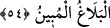
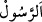

54. De ki: Allah’a itâat edin; Peygamber’e de itâat edin. Eğer yüz çevirirseniz
şunu bilin ki, Peygamber’in sorumluluğu kendisine yüklenen (tebliğ görevini
yapmak), sizin sorumluluğunuz da size yüklenen (görevleri yerine getirmeniz)dir.
Eğer ona itâat ederseniz, doğru yolu bulmuş olursunuz. Peygamber’e düşen, sadece
açık-seçik duyurmaktır.
“De ki:” Rahmete ermeyi ve kabul olunmasını umarak farzlar ve sünnetleri yerine
getirme konusunda “Allah’a itâat edin; Peygamber’e de itâat edin. Eğer” size
emrolunmasının ardından bu itâatten “yüz çevirirseniz” şunu bilin ki “Peygamber’in
sorumluluğu kendisine yüklenen” yâni mükellef tutulduğu ve emredildiği
peygamberliği, tebliğ görevini yapmaktır. “Sizin sorumluluğunuz da size yüklenen”
emredilen icâbet ve itâat görevinizi yerine getirmenizdir.
Bu sorumluluğun “yüklenme” diye ifâde edilmesi, onun ağırlığını ve yüz
çevirmelerinden sonra da uhdelerinde kalacak ağır bir sorumluluk olduğunu hissettirmek
içindir. Sanki “Eğer bundan yüz çevirirseniz, bu ağır yükün altında kalırsınız”
denilmektedir.
“Eğer” size itâat etmenizi emrettiği hususlarda “O’na itâat ederseniz,” her türlü
hayra ulaştıran, her türlü şerden kurtaran ve en yüksek gaye olan “doğru yolu bulmuş
olursunuz.”
Bu husûsun yüz çevirmenin hükmünün açıklanmasından sonraya bırakılması,
korkutmanın (terhîb) öne alınmasında teşviki (terğîb) te’kid olduğu içindir.
“Peygamber’e” yâni Hz. Muhammed (s.a.)’e “düşen, sadece açık-seçik
duyurmaktır.” Yâni açıklamaya ihtiyaç duyulan her şeyi gerektiği şekilde açıklamaktır.
Nitekim O, kendine düşen tebliğ görevini yapmıştır. Fakat sizin sorumluluğunuz devam
etmektedir. Eğer bunu hakkıyla yerine getirirseniz lehinize, yüz çevirirseniz de
aleyhinize olacaktır.
Burada “ kelimesinin cins ismi anlamında “peygamber” diye yorumlanması
uzak bir ihtimaldir. Çünkü ma‘rife olarak tekrar edilmiştir.
Ebû Osman (r.h.) der ki: “Kim sözlü ve fiilî olarak nefsine sünneti emrederse
hikmetle konuşur. Kim de nefsine hevâyı emrederse bid‘atla konuşur. Çünkü Allah Teâlâ
“Eğer O’na uyarsanız doğru yolu bulmuş olursunuz.” buyurmaktadır.
Denilir ki: Şu üç âyette üç husus, üç şeyle bağlantılı olarak inmiştir. Onlardan hiçbiri
birlikte zikredildiği olmadan kabul olunmaz.
1- “Namazı dosdoğru kılın ve zekâtı verin.” (el-Bakara, 2/110) âyeti. Kim namaz
kılar da zekâtını vermezse namazı da kabul olunmaz.
2- “Allah’a itâat edin, Rasûlü’ne de itâat edin.” (en-Nûr, 24/54) âyeti. Kim Allah’a
itâat eder de Peygamber’e itâat etmezse Allah’a itâati kabul olunmaz.